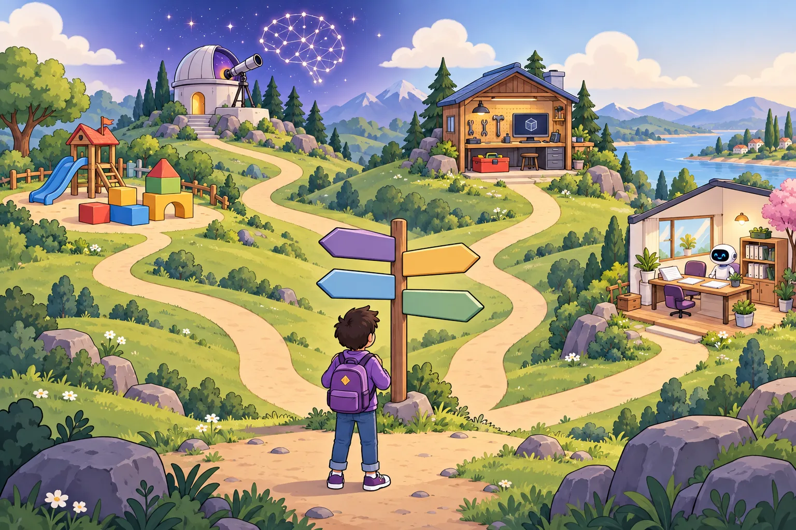
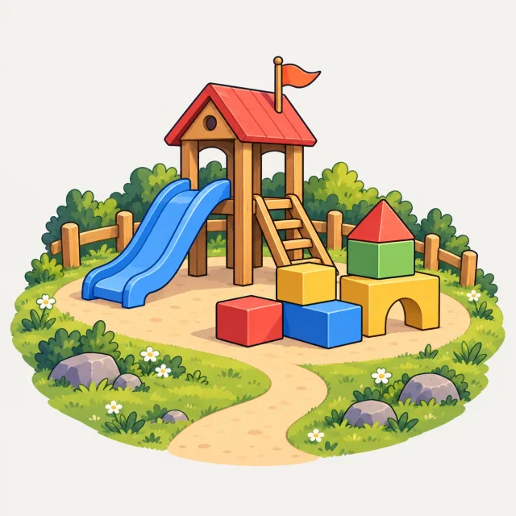
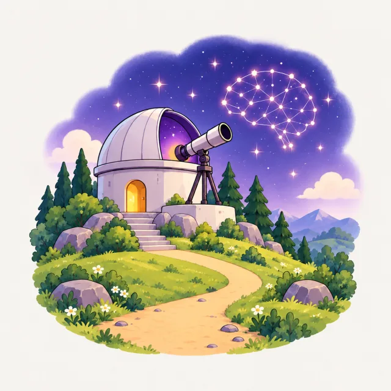
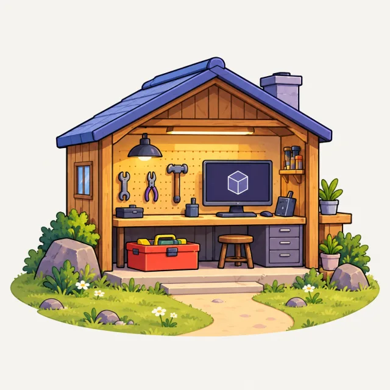
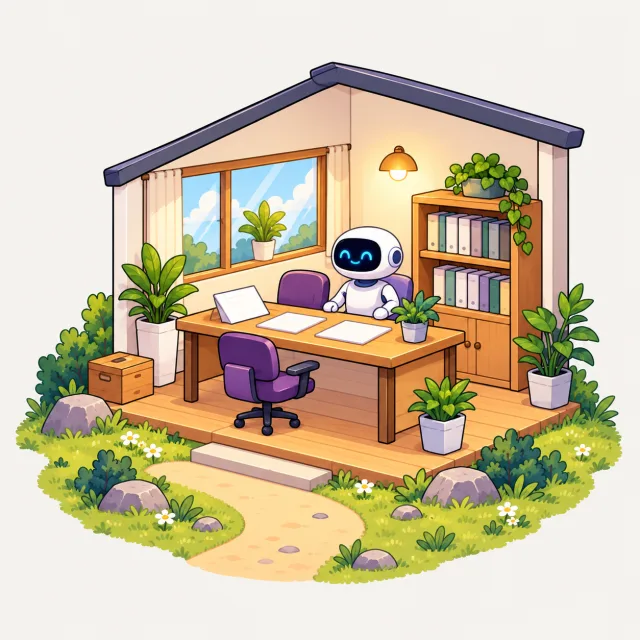

나에게 맞는 길 하나를 골라 1단계부터 시작해요


어린이 가이드
이 가이드 보기 →- 대상
- 7살부터 · 초등학교 1~2학년 · 처음 배우는 누구나
- 기간
- 하루 20분 · 4주 · 수업 10개
- 단계
- 4단계 · 필수 4
- 마치면
- 간단한 게임을 말로 설명하고 인공지능과 함께 만들 수 있어요.

인공지능 학습 가이드
이 가이드 보기 →- 대상
- 중학생 이상 · 인공지능을 제대로 이해하고 싶은 누구나
- 기간
- 주 3회 · 약 6주
- 단계
- 6단계 · 필수 4
- 마치면
- 모델이 다음 단어를 어떻게 고르는지, 같은 질문에 왜 다른 답이 나오는지 설명할 수 있어요.

IT 전문 가이드
이 가이드 보기 →- 대상
- 개발자 · 서버 운영자 · IT 직무 종사자
- 기간
- 주 4회 · 약 12주
- 단계
- 12단계 · 필수 10
- 마치면
- 인공지능 에이전트에게 코딩을 맡기고, 받아들이기 전에 그 변경을 diff 로 검토할 수 있어요.

업무 전문 가이드
이 가이드 보기 →- 대상
- 직장인 · 자영업자 · 팀 리더
- 기간
- 주 2회 · 약 5주
- 단계
- 7단계 · 필수 3
- 마치면
- 내 일 가운데 무엇을 인공지능에 맡기고 무엇을 직접 할지 정할 수 있어요.
길마다 전체 순서
- 필수
- 선택
- 여러 길이 함께 지나요